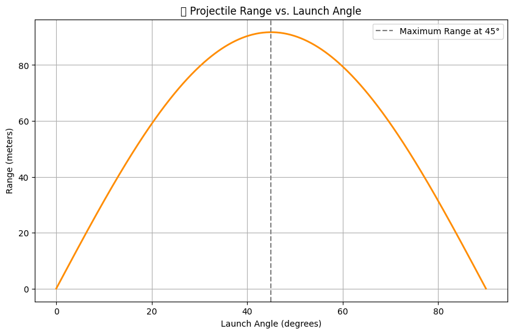

Problem 1
Investigating the Range as a Function of the Angle of Projection
1. Introduction
Projectile motion is a fundamental topic in physics that explores how an object moves under the influence of gravity. This document investigates how the range of a projectile depends on the angle of projection.
2. Theoretical Foundation
2.1 Governing Equations
The equations of motion for a projectile launched with initial velocity $$ v_0 $$ at an angle $$ \theta $$ are derived from Newtonian mechanics.
- Horizontal Motion (constant velocity): $$ x = v_0 \cos(\theta) t $$
- Vertical Motion (under constant acceleration): $$ y = v_0 \sin(\theta) t - \frac{1}{2} g t^2 $$
The time of flight $$ T $$ can be found by solving for when the projectile hits the ground ($$ y=0 $$): $$ T = \frac{2 v_0 \sin(\theta)}{g} $$
The range $$ R $$ (horizontal distance traveled) is given by: $$ R = \frac{v_0^2 \sin(2\theta)}{g} $$
3. Analysis of the Range
3.1 Dependence on Angle
- The function $$ R(\theta) = \frac{v_0^2 \sin(2\theta)}{g} $$ is maximized when $$ \sin(2\theta) = 1 $$, which occurs at $$ \theta = 45^\circ $$.
- Therefore, the maximum range is: $$ R_{max} = \frac{v_0^2}{g} $$
3.2 Effects of Initial Velocity
Since range is proportional to $$ v_0^2 $$, increasing the launch speed increases the range quadratically.
3.3 Effects of Gravity
A higher gravitational acceleration $$ g $$ decreases the range, making projectile motion more constrained on planets with stronger gravity.
4. Practical Applications
- Sports: Understanding projectile motion helps in optimizing throwing angles in sports like basketball and soccer.
- Engineering: Used in ballistics and designing projectile trajectories.
- Astronomy: Understanding planetary motion and escape velocities.
5. Example Calculation
Problem: A projectile is launched at $$ v_0 = 20 $$ m/s with an angle of $$ \theta = 30^\circ $$. Find the range.
Solution: $$ R = \frac{(20)^2 \sin(60^\circ)}{9.81} $$ Using $$ \sin(60^\circ) \approx 0.866 $$: $$ R \approx \frac{400 \times 0.866}{9.81} \approx 35.3 \text{ m} $$
6. Python Simulation
Below is a Python script to visualize the range vs. angle of projection.
import numpy as np
import matplotlib.pyplot as plt
g = 9.81 # gravity (m/s^2)
v0 = 20 # initial velocity (m/s)
theta = np.linspace(0, 90, 100) # angles from 0 to 90 degrees
range_values = (v0**2 * np.sin(2 * np.radians(theta))) / g
plt.plot(theta, range_values)
plt.xlabel('Angle (degrees)')
plt.ylabel('Range (m)')
plt.title('Projectile Range vs. Angle')
plt.grid()
plt.show()

This script generates a plot showing how range changes with the launch angle.
7. Conclusion
- The range follows a parabolic dependence on the launch angle.
- Maximum range occurs at 45°.
- Computational simulations help in analyzing non-ideal cases with air resistance.
This document provides a foundational understanding of projectile motion, helping in both theoretical and practical applications.